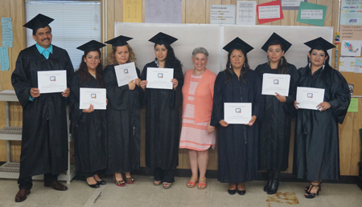
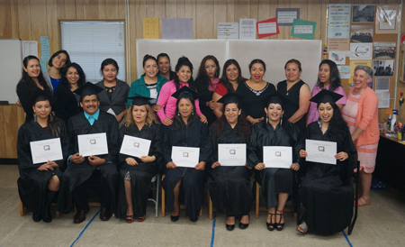
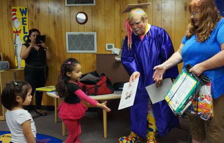

Congratulations, GRADUATES!

Graduating Students left to right; Nancy Fuentes de Chimal, Norbert Ovalle, Elvia Lilia Ramirez, Paula alente,Alma Patricia Parra, Brenda Cadena, Gabriela Velazquez.Seven students of the Advocacy Outreach Family Literacy Program completed all levels of English as a Second Language and have graduated from the program. We applaud their hard work and dedication to study. Now that they are proficient in English, they may move into Austin Community College classes for Adult Basic Education or GED. Some may now be eligible for traditional college courses or they may want to begin or advance a career. An Awards Ceremony was held May 19, 2016 on the Manor Excel Campus to honor their achievement.

Students Complete Spring Semester of Family Literacy Participants of the Advocacy Outreach Family Literacy Program completed course work for the spring semester. We celebrated with an Awards Ceremony to honor those graduating and, also, those students who made academic gains and students with excellent attendance. Preschoolers who attend the Early Childhood Development Center while their parents are in class also had a ceremony to honor their achievements. Following ceremonies, participants celebrated with a delicious lunch buffet supplied with dishes made from the families’ favorite recipes.

Summer programming will continue in June with an academic enrichment program that includes site visits to the Bob Bullock Texas History Museum and University of Texas Blanton Art Museum in Austin, Aquarena Springs in San Marcos, Witte Natural History Museum in San Antonio, Cameron Park Zoo and Baylor University Mayborn Museum in Waco. The summer program is offered free of charge to families and is open to participants in good standing who attended spring semester classes and their children, from preschool through high school. Registration for the 2016/17 Family Literacy program begins in August. Call now (512-281-4180) to be placed on the waiting list.